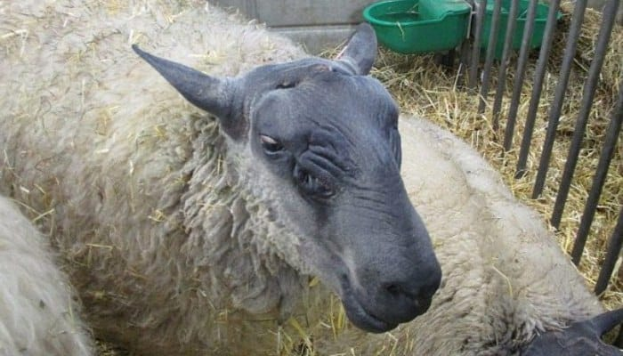

países.Calculamos que del 80 a 85% de la carne ovina se importa, lo que nos indica que hay
oportunidad de negocio en Panamá. Entre las razas de ovejas que puedes encontrar en
Mi Ovejita están:
Nombre Imagen Ovinos Barbados Black Belly Oveja Azul de Maine  Oveja Dorper 
Oveja katahdin